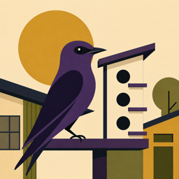
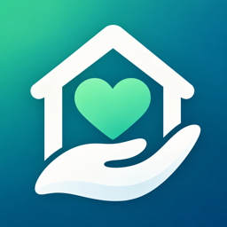

A passive network SIGINT console for Linux, written in C99 from the kernel-facing code up. Twenty-seven live ncurses views: 802.11 beacon, probe and deauth sniffing, ARP / mDNS / NBNS / DHCP / SSDP device discovery, TLS ClientHello and JA3 fingerprint capture, and six alert rules for port scans, deauth floods, NXDOMAIN bursts and periodic beaconing. It never injects, never scans and never modifies kernel state — it only watches, and writes JSONL plus a per-alert pcap for whatever comes next.
C99libpcapnl80211ncurses
JA3 / TLS50 unit tests
- Platform
- Linux
- Licence
- Open, on GitHub
- Posture
- Passive only: observe, never emit
- Output
- Forensic JSONL + pcap
A real-time 3D Stonehenge that is a working astronomical calendar, on a hand-rolled Metal 3 renderer — no game engine. Pick any date from the monument's own era to tonight: the sun, moon and nine thousand stars are computed from the published ephemerides, the shadows are tested against an analytic solution to 0.28 m, and every stone traces to cited survey data. Two labelled states — the completed monument of 2200 BC and today's ruin — with an animated four-thousand-year passage between them. Druidic in spirit, archaeological in fact.
Swift · Metal 3Meeus · VSOP87 · Hipparcos
Shadow oracleCited archaeology
Vendor-neutral infrastructure for healthcare contingent labor. Hidden middleman fees skim a few percent off every dollar of travel, per-diem and surgical-tech staffing, and expired credentials cancel surgeries on the day. Crane turns the whole thing into a graph-backed market the provider runs themselves: one posting broadcast fairly to a panel of agencies, submissions gated on live credential compliance, transparent rates, and the fee kept in house — order to panel to award to timesheet to settlement, in integer cents.
ElixirGraph databaseHTTP APICredential compliance
Organic-farm recordkeeping for iPhone and iPad: a USDA-sourced plant-cultivar database, grow management, soil-health monitoring with a pH spectrum and lab integration, agricultural lease management with payment tracking, worker time tracking with overtime detection, FDA FSMA harvest-safety checklists, and full traceability of organic amendments — everything an inspector asks to see, already in your pocket. Syncs across your own devices with CloudKit; fully localized in English and Spanish.
SwiftUICore DataCloudKit sync
EN + ESFSMA
Two tones, one in each ear, meet inside a glowing vacuum tube; the beat between them slides through the brainwave bands and lights the chakras. Two band-limited morphing oscillators render straight to the output through a lock-free parameter bridge, and a Metal particle scene draws the same signal as it sounds — the stereo field is the instrument.
AVAudioSourceNodeMetalLock-free bridgeApple Health
Phrase-passwords you can say out loud, drawn from 16,913 embedded cat names, sprinkled with digits and symbols, then scored — five candidates measured with Shannon entropy and a stack of complexity heuristics, and the best one handed to you. Pure C11: a single binary for Linux and macOS with no runtime dependencies, no configuration file and no network. The same idea wearing a very different coat runs as an app — see MeowPass below.
C11Single binaryShannon entropy
16,913 cat namesMeowGram steganography
A privacy-first appointment book for solo service providers — the tattoo artists, nail techs, stylists and cleaners whose client list is itself confidential. It is the sole source of calendar truth: it never integrates with the system Calendar, never reaches the network, never enrolls in iCloud, never donates a Siri intent, never indexes to Spotlight. Photos and notes live in an encrypted vault behind an app PIN, with a second per-client PIN for flagged clients and a duress PIN that opens a believable decoy vault when unlock is coerced.
Swift · SwiftUI · SwiftDataKotlin · Compose · Room
On-device encryptionZero dependencies
- Platform
- iPhone · Android, at parity
- Version
- 1.0
- Price
- $8.99, paid once
- Data
- Local vault. No network.
Private, on-device time tracking and Electronic Visit Verification for family caregivers doing self-directed care work. Clock in from a Home Screen widget or a Siri shortcut, log the service performed, take the participant's PIN approval, and export a timesheet PDF for whichever channel the billing provider uses — fax, email, upload or print-and-sign. Daily totals, midnight splits and pay-period arithmetic are done for you; location is captured at clock-in and clock-out only, never in between; and every event is written into a tamper-evident SHA-256 audit chain. No account, no server, nothing shared.
SwiftUILive Activity · WidgetsSHA-256 audit chain
PDF timesheetsEN · ES · VI · FIL
A turn-based historical farming life for iPhone. Inherit a mortgaged quarter-section anywhere from 1930 to today and farm it for thirty seasons against real USDA prices, NOAA weather and the actual farm bills of the era — the almanac, the newspaper, the ledger and the reckoning. Free. No ads, no accounts, entirely on your device.
SwiftUIUSDA price seriesNOAA weather39 locales
Live HF propagation, aurora, POTA, SOTA, DX cluster and APRS — plus sun, moon, marine and weather, folded into one brief for exactly where you are. Panels and widgets you arrange yourself, computed on the device rather than fetched from someone else's dashboard.
SwiftUIWidgetswatchOS companionOn-device almanac
A native macOS app that turns freelance client work into a stage-gated practice: leads from Fiverr, Twine, LinkedIn and referral move through qualification, a written scope with explicit out-of-scope, a deposit before build, signed-off requirements, change requests priced against the original, a clean handoff, and a close-out that asks for the testimonial and the portfolio permission. CRM and billing sit in local SQLite; specs and proposals stay plain Markdown you can grep, edit anywhere and hand to an agent. Billing is imported exactly from append-only ledgers — never estimated.
SwiftUI · macOSGRDB / SQLiteMarkdown workspaceLocal-first
- Platform
- macOS
- Version
- 0.1.0, pre-release
- Data
- Local SQLite + your files
- Network
- Only what you connect
A native macOS app that models the software system a repository represents — not its files — as a knowledge graph built from literal repository evidence, then renders it as a pattern visualizer: cycles, coverage, callers and architectural roles in one view. The graph is append-only and content-addressed, so every fact keeps its provenance and every revision can be replayed. Analysis runs entirely on your machine.
Swift · SwiftUISwiftSyntax + tree-sitter
GRDB / SQLiteSwift · Python · C
The native app the command-line generator grew into, in a Shōwa-era game-show register. It does three things: conjures five sayable passwords from a thousand-odd cat names and crowns the one with the best complexity score; judges any password you paste, nought to ten, with a verdict somewhere between "a kitten could paw this open" and "fur-midably complex"; and composes a MeowGram — a secret note tucked invisibly inside an ordinary cat photo with DCT steganography, optionally sealed with a ChaCha20-Poly1305 passphrase. There is an iMessage extension for sending them and a share extension for decoding them. No accounts, no servers, no tracking; the Android build ships without the network permission at all.
SwiftUIiMessage + share extensions
DCT steganographyChaCha20-Poly1305Offline
- Platform
- iPhone · iPad · Mac, one record
- Android
- Kotlin port, in development
- Price
- Base app free; optional extras planned
- Network
- None. Offline forever.
A real-world, soil-first companion for corn farmers — the practical sibling of the Corn 3000 game. Map fields on satellite imagery, auto-detect the soil from USDA SSURGO and ISRIC SoilGrids, follow a proper soil-sampling guide and record the lab results, track the season by growing-degree days to the current corn stage, and read a caveated yield outlook that is a range, never a promise. Then project ten years of organic matter, pH and soil life under cover crops, reduced tillage, manure and rotation. Every survey number wears an "estimated" badge; a lab test always wins. On-device, offline, no account.
SwiftUIGRDB / SQLiteUSDA SSURGO · SoilGrids
Growing-degree days33 languages
15
Martin
Property maintenance with a paper trail.Self-hosted v1

A mobile-first maintenance suite for small landlords and the tradespeople who keep their rentals running, named for the Purple Martin. The handyman clocks time against a property, attaches photos and notes, keeps a materials list and records expenses with receipts; the owner approves time and money and assigns repair tickets; a resident reports a problem with photos and watches it move. Offline is a first-class state on every device, the server is a single docker compose up on your own Linux box, approval locks are enforced server-side, and the same container answers a browser with a zero-JavaScript manager's desk. iOS and Android at strict parity, with no third-party dependencies on either.
Elixir · PhoenixSwift · SwiftUIKotlin · Compose
Offline-first syncZero dependencies
- Platform
- iPhone · Android · web
- Server
- Self-hosted, one compose file
- Money
- Recorded honestly, never moved
- Data
- Your box. Your records.
A stylized 3D space trading game in which hyper-intelligent cats run a galactic cat-food empire. Sign on as a cat, take delivery of a mortgaged Loaf-class heavy freighter, and work the load board across a shared, server-run Sol system where every price is a pure function of station stock and every flight is priced off where the planets actually are tonight. The universe runs on five-minute ticks: book a haul, put the phone away, and a notification calls you back for the delivery wire. Deterministic integer simulation, a custom Metal renderer built for Apple GPUs, and a server that proves its own history. Nothing is scripted, including the mortgage.
Swift · Metal 3Deterministic integer sim
Live exchange serverFive-minute ticksSwiftUI client
- Platform
- iPhone · macOS demo
- Universe
- One shared Sol, run by the server
- Engine
- Deterministic, replayable, hashed
- Business
- Premium. Zero dark patterns.

A paid family caregiver's own record, for the week they would otherwise rebuild from memory on a Sunday night. Tap a task to start, tap again to stop, then say how much help it took — on their own, watched, some help, full help. By the time the timesheet is due it is already written, totalled by the service the fiscal agent actually pays for. Arizona's programs are known by name: Parents as Paid Caregivers, Self-Directed Attendant Care, Agency with Choice and the rest arrive with their own hour limits, allowed hours, service codes and billing modifiers, each carrying the citation it came from — and anything unconfirmed says so rather than hardening into a fact. It warns before a limit is crossed and never stops the timer. The Care Summary is the other half, for the assessor who asks whether this care goes beyond what any parent would do: what was done, how often, and how much help it took. It is not an EVV app and transmits nowhere — keep using the one the agency supplied; CareTally sits beside it.
SwiftUIState rules packsSHA-256 audit chain
Timesheet · Care Summary PDFsEN · ES · VI · FIL